| Início | Mapas | Deuses | Itens | Dicas |
Os itens são objetos compráveis que forcenem atributos e benefícios para os deuses. Estes itens são comprados com o dinheiro que você adquire durante a partida, derrotando minions, matando jogadores entre outros.
Alguns itens são mais adequados para uns personagens do que para outros. Por exemplo: Magos são aconselhados a comprar itens ofensivos, já guerreiros, itens mesclados, variando entre dano e proteção.
PoderPoder é um atributo tanto de deuses que causam dano físico quanto de deuses que causam dano mágico, e consiste simplesmente de um aumento do dano dos deuses, tanto de ataques básicos quanto de habilidades especiais. |
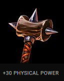 |
Velocidade de ataqueVelocidade de ataque ou cadência, é um atributo que aumenta a velocidade de ataques básicos dos deuses (todos os deuses possuem ataque básicos). |
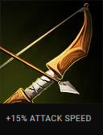 |
Roubo de vidaRoubo de vida é um atributo tanto de deuses que causam dano físico quanto de deuses que causam dano mágico, e consiste de dar a habilidade de recuperar uma quantia de pontos de vida baseada no dano causado nos inimigos. |
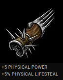 |
PenetraçãoPenetração é um atributo tanto de deuses que causam dano físico, quanto de deuses que causam dano mágico e consiste de fazer com que tanto os ataques básicos, quanto habilidades, ignorem uma parte da defesa dos inimigos. Essa quantia ignorada poder ser tanto uma porcentagem da defesa total do inimigo, quanto um número determinado (não excendo 40). |
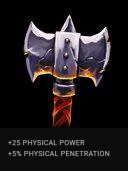 |
Chance de críticoChance de crítico é um atributo exclusivo dos deuses que causam dano físico, e consiste em proporcionar uma chance dos ataques básicos darem dano crítico. Dano crítico é 200% do dano normal. |
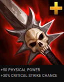 |
DefesaDefesa é um atributo que consiste em diminuir o dano recebido do inimigo. Existem a defesa física, que diminui o dano físico recebido, e a defesa mágica, que reduz o dano mágico recebido. |
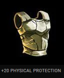 |
VidaVida é um atributo que aumenta os pontos de vida do deus. |
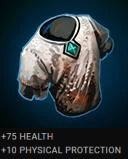 |
Redução de controleRedução de controle é um atributo que diminui o tempo que o deus fica sobre efeito de controle. Controle vem de algumas habilidades de alguns deuses, e penalizam o inimigo com algum efeito que impede o deus de andar, jogar habilidades ou até mesmo dar ataques básicos. |
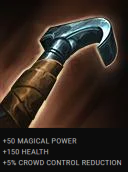 |
HP5Esse atributo aumenta a recuperação de vida por segundo dos deuses. |
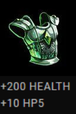 |
Velocidade de movimentoVelocidade de movimento é um atributo que aumenta a velocidade com que os deuses andam pelo mapa. |
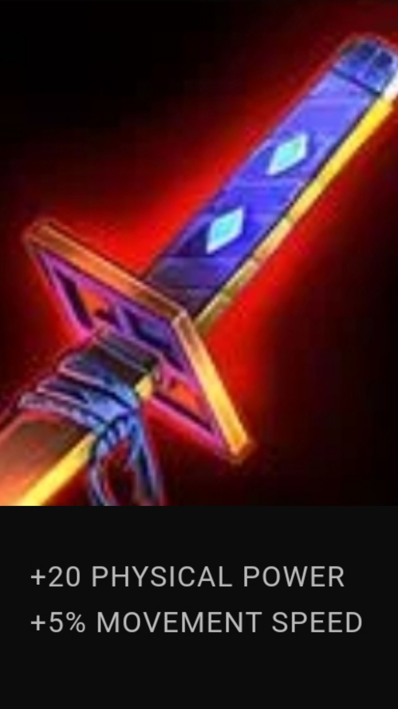 |
Redução de intervaloRedução de intervalo é um atributo que reduz o intervalo com que os deuses podem usar uma habilidade especial. |
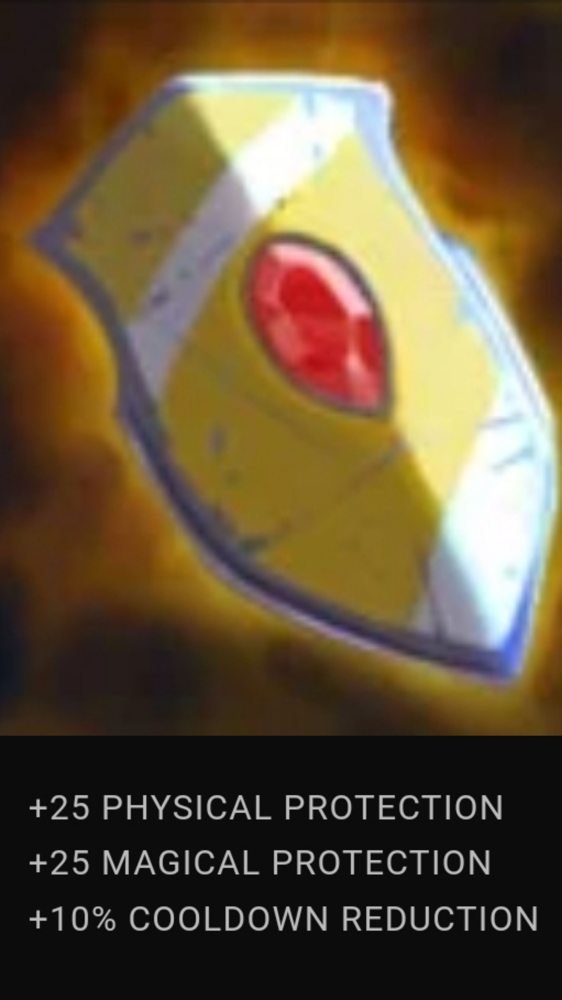 |
ManaMana é um atributo que aumenta a mana do deus (todas habilidades especiais usam mana). |
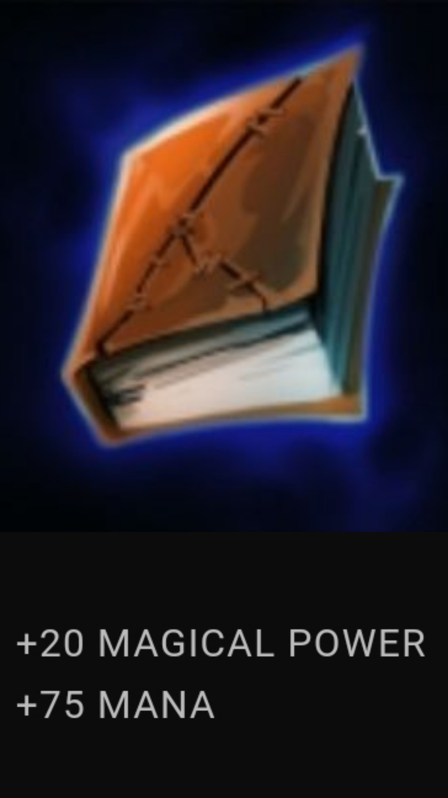 |
MP5MP5 é um atributo que aumenta a recuperação de mana por segundo dos deuses. |
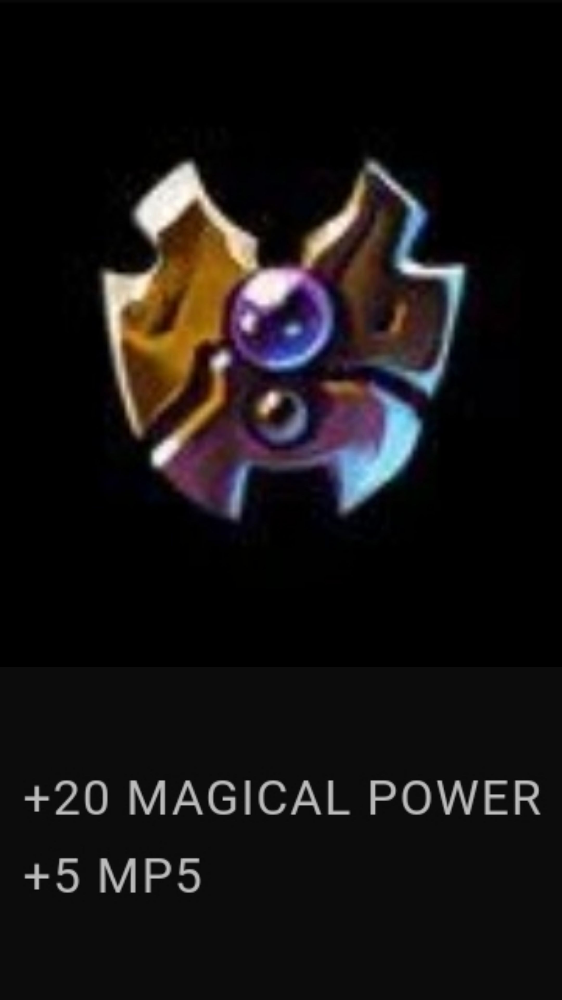 |
Para mais informações sobre os itens, confira no site oficial: SMITE